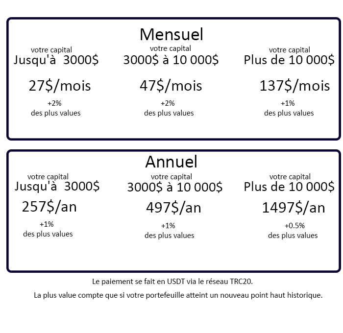

La clé api privé et publique + le nom dédié à cette clé vous sera demandé.
1.
2.
3.Créé un sous-compte dédier au robot MAK2.
4. Gardez le nom du sous-compte quelque part ,
il vous sera demandé lors de la configuration du robot.
5.Au moment de la création de la clé publique et privé il faut
que vous soyez sur votre sous-compte dédié au robot MAK2.
6.Gardez quelque part la clé publique et privé , elles vous seront demandé
lors de la configuration du robot MAK2.
7.Vérifiez que l'option trading soit activé pour le sous-compte dédié au robot MAK2.
8.Cette étape concerne que si l'option trading n'est pas activé comme vu à l'étape 7,
appuyez sur modifier (forme de stylo) et configurez comme ceci, cela permet d'activer seulement le trading.
1.
2.Créé un sous-compte dédié au robot Mak2.
3.
4.Configurez les paramètres de la clé.
5.Cochez la case pour autoriser seulement le trading, et n'oubliez pas de sauvegarder.
-(2) Choisir les crypto qui seront trader par le robot Mak2 et vérifier qu'il existe une paire avec l'USDT, exemple :
Vous souhaitez utiliser le robot sur l'XRP et vous êtes sur binance, il faut qu'il existe une paire XRPUSDT sur binance
-(3) Vous aurez le choix entre ces tarifs:

Une fois que vous avez toutes ses informations,
il ne vous reste qu'à nous les communiquer sur telegram et on
se chargera de la configuration avec vous.